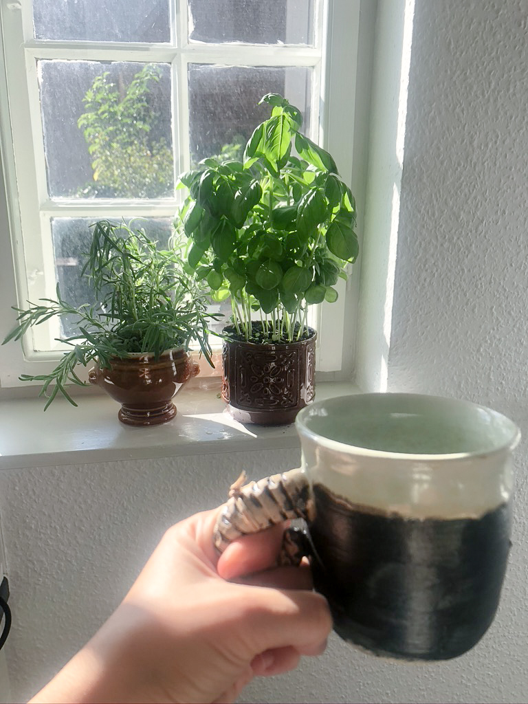
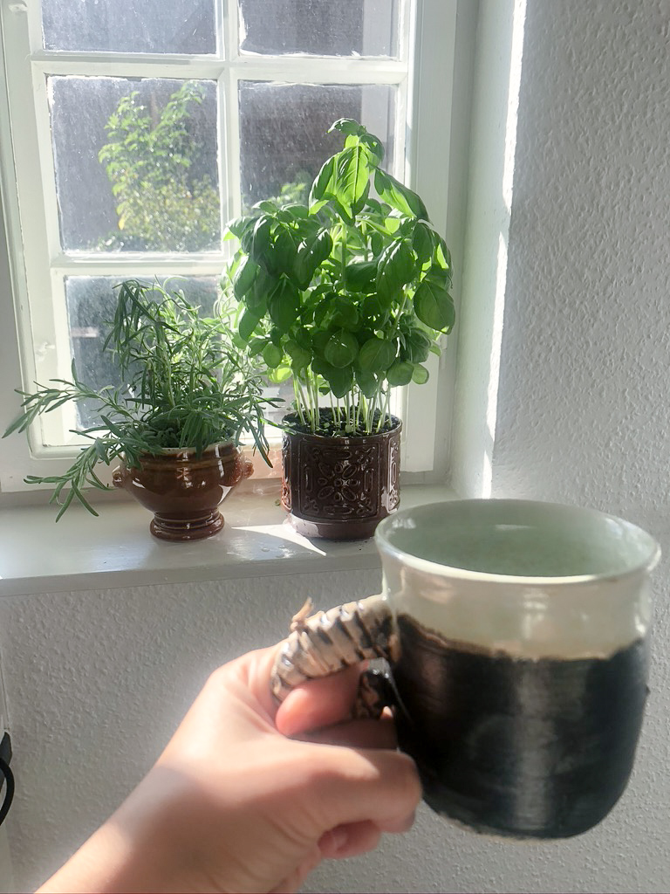

Efterårstrends til indretningen
Hvad er godt at kigge efter, når man leder efter ting til lejligheden?
Hvad kan man finde? Og kan det betale sig at gå i genbrug?
Mange genbrugsbutikker, har både brugskunst og tøj.
Se mere i vores genbrugsguide lige her.
Du kan være kreativ og f.eks. bruge tallerkner som smykkeskåle.
Male en vase som i denne artikel.
Sy puder til lejligheden i genbrugsstof.
Putte dine krydderurter i gamle potter mm.
 

Man kan finde mange gode,
mere personlige ting til lejligheden, i genbrug.
Her er sofa, puder og tæppet fra genbrug.
I de fleste genbrugsbutikker, kan du som oftest finde hjemmestrikkede
klude, tæpper og puder mm.
Ved strik, sørg for at kigge efter pletter, eller hvorvidt det er ved at trævle.
Det kan være svært at redde